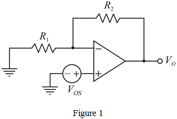

Write the expression for output voltage.
Substitute for  ,
,  for
for  and
and  for
for  in the equation.
in the equation.
Therefore, the input offset voltage,  is .
is .
Op-amp is working in inverting configuration with the input grounded.
Circuit diagram for evaluating the output dc offset voltage due to offset voltage at input stage is shown in Figure 1.

Write the expression for output voltage.
Substitute for , for and for in the equation.
Therefore, the input offset voltage, is .